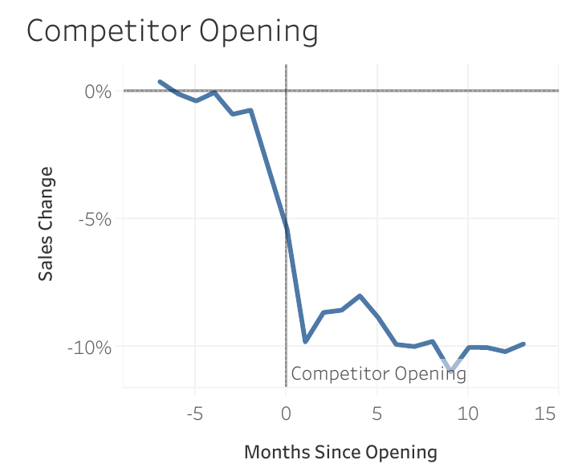

Hanyang University · Seoul, Korea
Mar 2018 — Aug 2024B.A. in Economics & Finance
GPA 4.42/4.5Summa Cum Laude
- Relevant coursework: Financial Accounting, Economic Statistics, Financial Economics
Economics & Finance graduate from Hanyang University (Summa Cum Laude) who learns the tools a problem needs and checks every number before drawing a conclusion. Below are data analysis projects built with SQL, Python and Tableau.
Using about 1.0M daily sales records from 1,115 Rossmann drugstores in Germany, I measured how the same promotion performs at different times and how much sales fall when a competitor opens nearby.

Personal project · 2026 · No discount or promotion-cost data, so effects are on sales, not profit.
I checked and cleansed the product master and order data of a derma-cosmetics brand with SQL, then analyzed year-over-year growth by channel and gross margin by brand line and SKU.

Personal project · 2026 · Synthetic data; the aim is to show the cleansing, validation and aggregation process rather than the figures themselves.
B.A. in Economics & Finance
GPA 4.42/4.5Summa Cum Laude
Exchange student
Hanyang University, School of Economics & Finance
Korean (native), English (fluent) · Lived in Toronto, Canada as a child
Hanyang University
Hanyang University